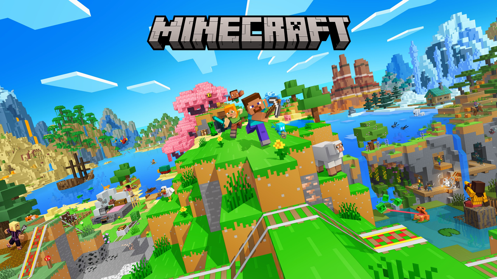
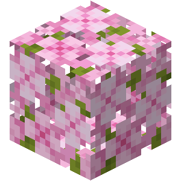
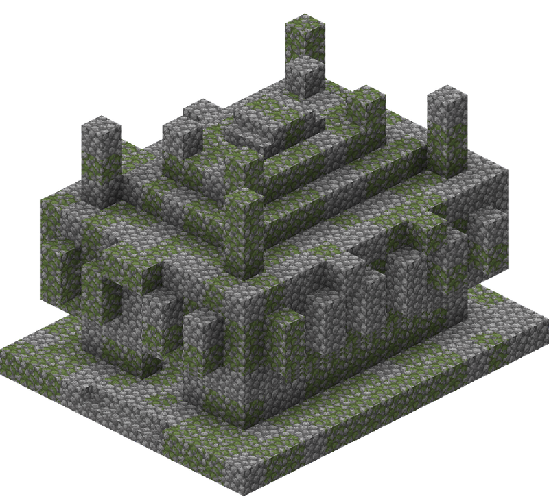
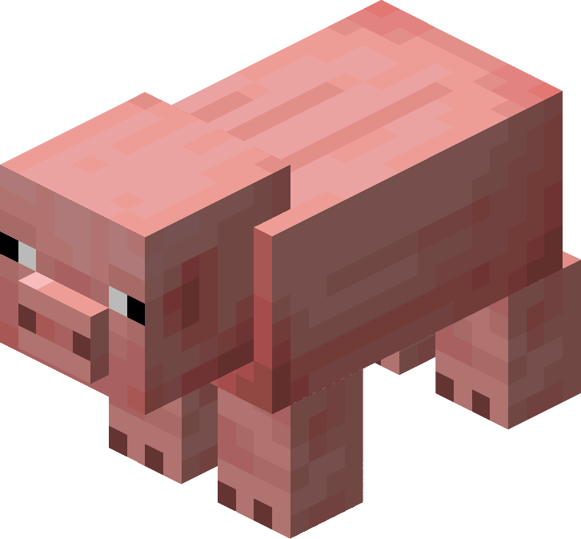

Bem-vindo(a) a BioCraft!


A BioCraft é uma enciclopédia virtual dedicada a registrar, organizar e apresentar a incrível
diversidade
biológica encontrada nos mais variados biomas do universo de Minecraft.
Nosso objetivo é
oferecer um guia
completo para exploradores que desejam conhecer melhor cada ambiente antes de se aventurar por suas
paisagens.
Aqui, você poderá encontrar informações detalhadas sobre a fauna, a vegetação, os recursos naturais e as
principais características de cada bioma, descobrindo quais criaturas habitam
determinada região, quais
plantas podem ser encontradas pelo caminho e quais materiais tornam cada local único.
Além disso, a BioCraft também reúne dicas de exploração e sobrevivência, indicando possíveis perigos,
recursos importantes, condições do ambiente e estratégias que podem ajudar
durante sua jornada. De
florestas
densas e montanhas congeladas a desertos áridos, oceanos profundos e cavernas misteriosas, cada região
possui suas próprias particularidades,
desafios e formas de vida.
Minecraft

O Minecraft é um jogo sandbox em 3D desenvolvido pela Mojang Studios, parte da Xbox Game Studios.
Lançado inicialmente como o que hoje é conhecido como Minecraft Classic
em 17 de maio de 2009,
o jogo foi lançado oficialmente em 18 de novembro de 2011, após diversas atualizações. Desde o seu
lançamento, Minecraft expandiu-se para dispositivos
móveis e consoles.
O Minecraft possibilita o jogador explorar, interagir e modificar um mundo gerado dinamicamente feito de
blocos de um metro cúbico de tamanho. Além de blocos, o ambiente possui
plantas, criaturas e itens.
Algumas atividades do jogo incluem a construção, a mineração de minérios, a luta contra criaturas hostis e a
fabricação de novos blocos e ferramentas reunindo
vários recursos encontrados no jogo.
Conteúdos
 |
 |
 |
 |
|---|---|---|---|
|
|
|
|
|